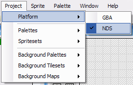
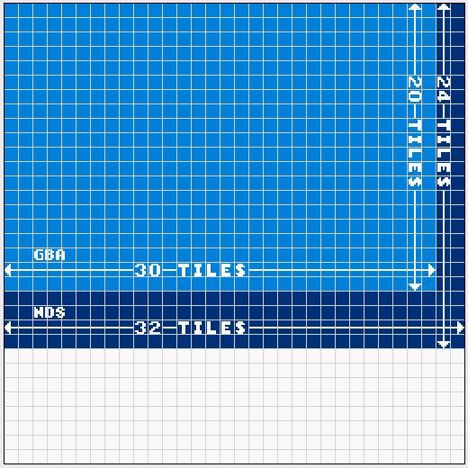

Creating an NDS ROM File
If you want to create an NDS ROM file instead of a GBA ROM, then you need to change the platform to NDS so that Spritely will generate NDS code instead of GBA code.
Step 1 : Set Platform to NDS
In Spritely, set the platform to NDS by selecting "NDS" in the "Platform" submenu of the "Project" menu:.

Step 2 : Edit project
When you're creating a NDS project, almost all of the tools are exactly the same as when you're creating a GBA project. However, there are a few differences.
The big difference is that the NDS screen size is larger than that of the GBA. The NDS screens are each 32x24 tiles (256x192 pixels) whereas the GBA screen is 20x30 tiles (240x160 pixels).

Spritely shows 32x32 tiles in the background map editor because that's how many tiles the GBA/NDS can store internally for the background map. The bottom 8 rows of tiles (12 rows on the GBA) are not visible on the NDS screen, but they will be useful once we we learn how to scroll the background in a later tutorial.
Step 3 : Export project
Export your project as you normally would. When the platform is set to NDS, it will export NDS code instead of GBA code.
These code differences are minor and all of the tutorials will work for either GBA or NDS projects (unless otherwise specified).
Step 4 : Create ROM file
Now you can create the ROM file exactly the same way as you did for the GBA ROM file. You can do this via the command line (as described in the Building a GBA ROM File tutorial) or using Programmer's Notepad (as described in the Using Programmer's Notepad tutorial).
Finished!
If you open your project directory, you'll see the new files that were created.
build/ — This directory contains temporary files that the compiler used when building the ROM file.
mygame.elf — This is another temporary file.
mygame.arm9 — This is yet another temporary file.
mygame.nds — This is the NDS ROM file that contains your game!
You're now ready to run your ROM and see how your sprite looks.